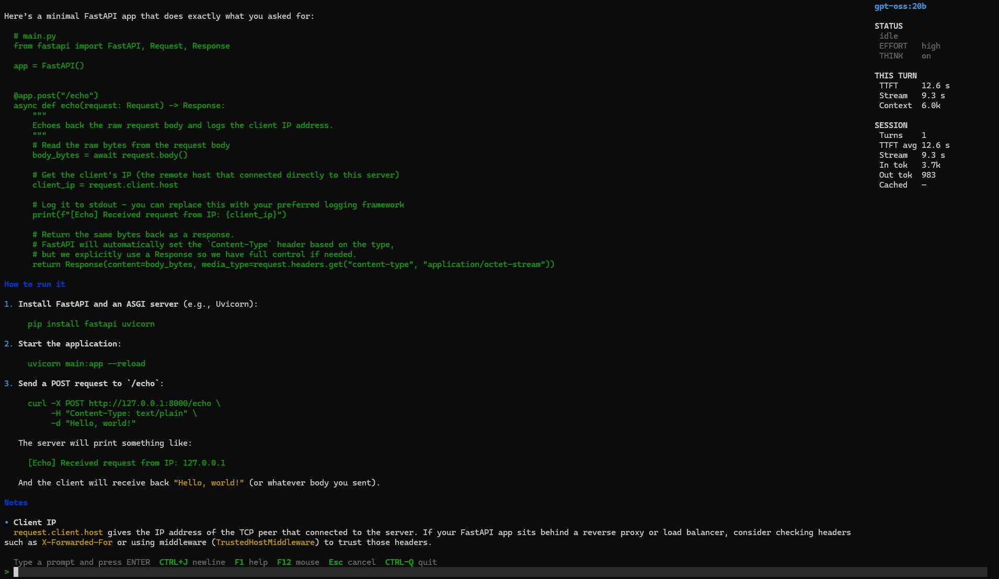
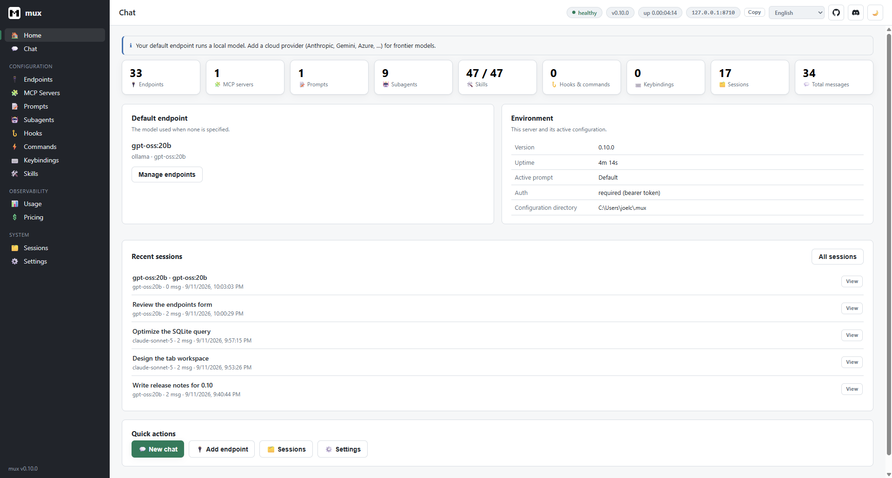
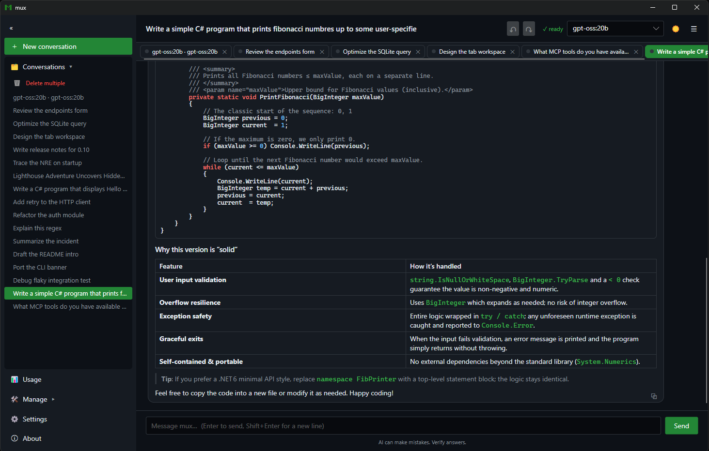
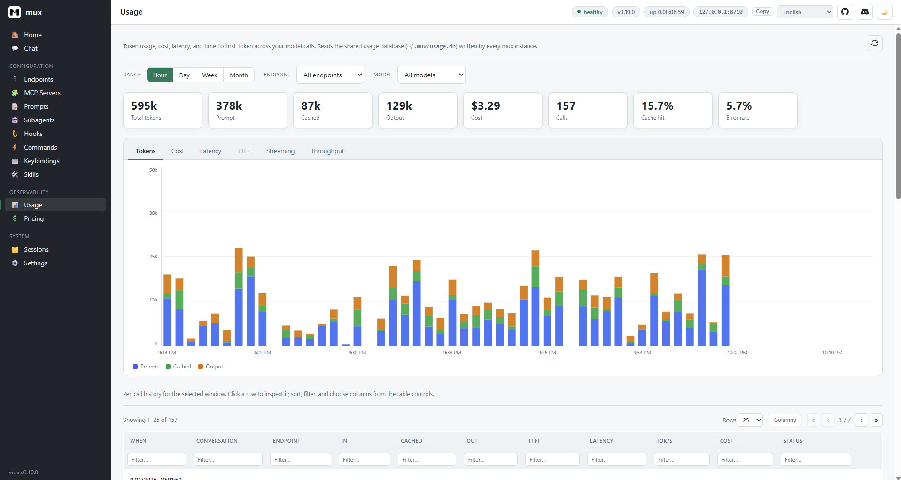
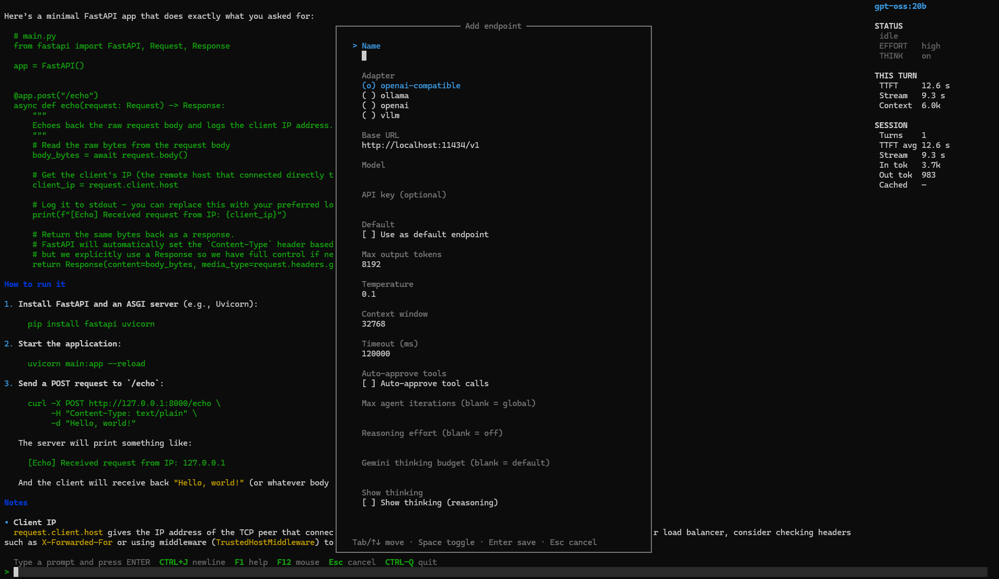
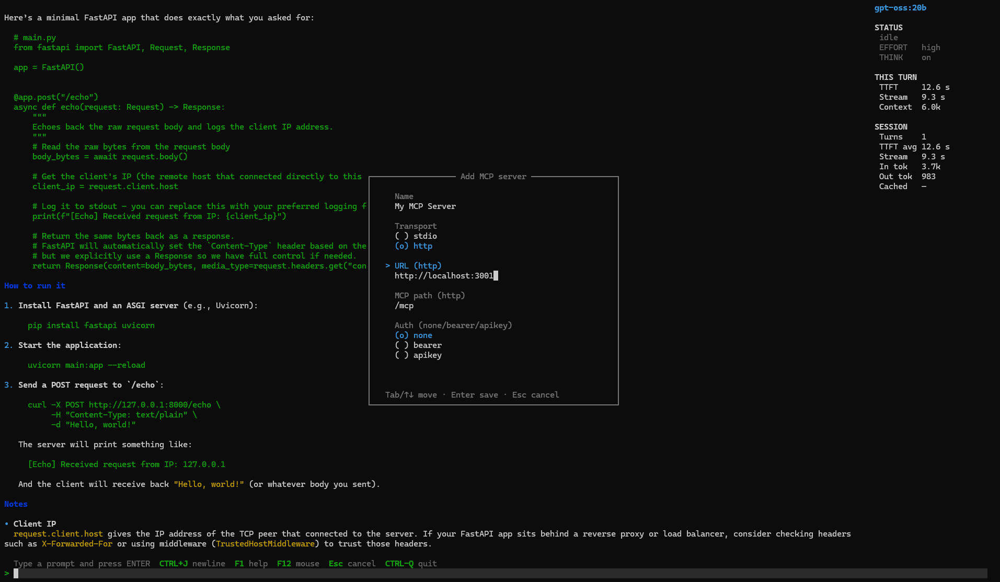
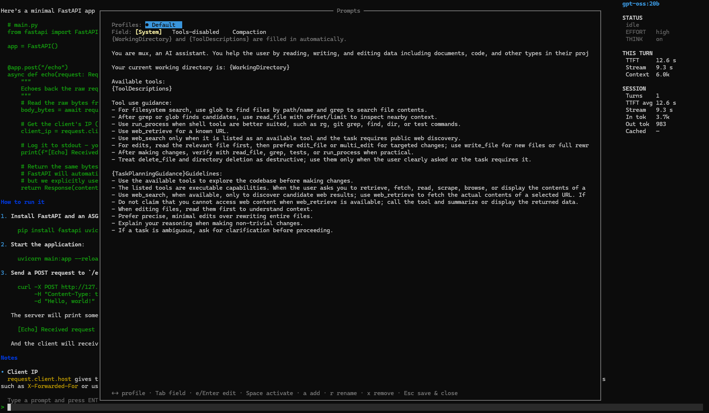
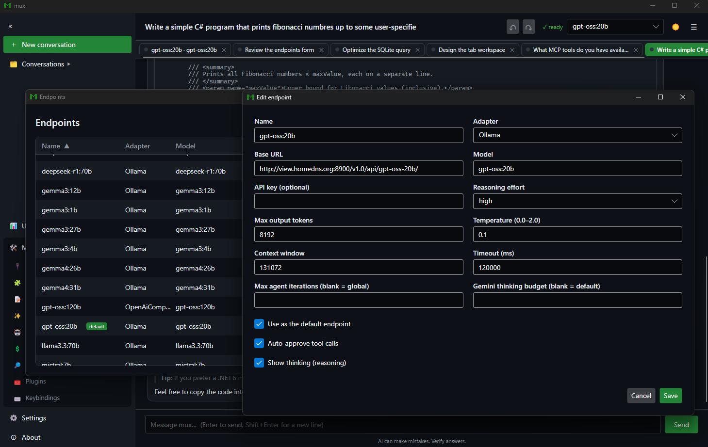

mux is a Claude Code–class coding agent that runs on the backend and model you choose — from a terminal UI, a web dashboard, a desktop app, or fully headless. Backend-agnostic. Endlessly configurable. Zero vendor lock-in.
Bring your own inference — local or remote, one CLI for all of it
Every surface shares one core — Mux.Core. Start in the terminal, script it in CI, open the dashboard in a browser, or launch the desktop app. Same agent, same tools, same sessions.
A full-screen REPL with per-job transcripts, a live job sidebar, a multi-line composer, slash commands, an interactive tool-approval modal, and autosaved resumable sessions. Multiple prompts run as concurrent background jobs.
Single-shot runs for scripting and automation. Stream plain text, one buffered JSON object, or machine-readable JSONL — one event per line. Drop mux into build steps, GitHub Actions, or any shell pipeline.
A loopback-bound, token-guarded REST + WebSocket API with a self-contained single-page dashboard — chat, configuration, sessions, and usage/pricing analytics. Hosted in the background by a cross-platform system-tray agent.
An Avalonia client that links the engine in-process: streaming chat with Markdown, tables, and syntax-highlighted code; parallel conversation tabs; a command palette; the full configuration surface; the usage dashboard; and a UI localized into 11 languages.
mux turns the model into a real system operator — reading and writing files, running commands, browsing the web — and gives it to you in the terminal, the browser, and a native desktop app.
Ask in plain language and watch mux read files, write code, run commands, and search — each tool call part of the transcript, with a live sidebar tracking status, reasoning effort, time-to-first-token, context, and tokens per turn.
read-only, workspace-write, or unrestricted, plus tool allow/deny globs
Run mux serve and drive everything from the browser — a token-guarded local dashboard with chat, sessions, and usage analytics, plus one-glance counts of your endpoints, MCP servers, prompts, subagents, skills, hooks, and keybindings.

mux Desktop links the engine in-process: streaming chat with Markdown, tables, and syntax-highlighted code; parallel conversation tabs that each run their own agent turn concurrently; AI-summarized titles; a command palette; and the full configuration surface.
Ctrl+K command palette
Every model call is recorded to a local SQLite database — tokens, cost, latency, time-to-first-token, streaming, and throughput. Explore it as charts over time, filtered by endpoint and model, in both the dashboard and the desktop app.
pricing.json
mux isn't a closed box. Plug in tool servers, encode repeatable procedures, and delegate scoped work to isolated agents — all configured in plain files or managed live in-app.
Define stdio or HTTP Model Context Protocol servers and mux connects live on startup — discovering each server's tools, exposing them to the model, and showing per-server connectivity. Add, edit, or remove servers without a restart.
{
"name": "filesystem",
"transport": "stdio",
"command": "npx",
"args": ["-y", "@mcp/server-fs"]
}
Versioned Markdown-plus-code capabilities that turn a fuzzy request into a fixed, deterministic procedure — the Markdown carries judgment, the code carries determinism. 46 curated defaults ship on first run; author, import, and manage your own in-app.
--- name: git-commit description: Stage & commit changes mutates: true commands: [run] ---
Delegate a scoped sub-task to a named subagent. Each runs in an isolated conversation — its own system prompt, endpoint, and tool allow-list — and returns only its final answer, keeping the primary agent's context clean.
{
"name": "reviewer",
"endpoint": "gpt-oss-local",
"allowTools": ["read_file",
"grep"]
}
Beyond MCP, skills, and subagents, mux ships a deep set of capabilities for engineers building agents and agentic workflows — not a thin wrapper around a chat endpoint.
File read / write / edit / multi-edit / delete, directory ops, glob, grep, process execution, and rendered web retrieval — ready on turn one.
Define stdio / HTTP servers in mcp-servers.json or manage them with /mcp. mux connects live, discovers their tools, and exposes them to the model.
Versioned Markdown-plus-code capabilities that turn a fuzzy request into a fixed, deterministic procedure. 46 curated defaults ship on first run; author your own in-app.
Delegate a scoped sub-task with spawn_subagent. Each runs in an isolated conversation — its own prompt, endpoint, and tool allow-list — and returns only its final answer.
The model breaks big work into a task DAG and tracks it live — pending → running → done. A task_plan_updated event streams to orchestrators in JSONL mode.
In a git repo, mux snapshots the working tree before each turn so /undo and /redo roll file changes back and forward — your branch, history, and stash untouched.
Every model call is recorded to a local SQLite database — tokens, cost, time-to-first-token, latency, throughput. View it via /usage or the dashboard's charts.
Confinement postures (read-only, workspace-write), tool allow/deny globs, and approval policies — ask, auto, or deny. Or --yolo for full trust.
Out-of-process event hooks (session-start, user-prompt-submit, session-end) and custom /slash commands configured in hooks.json.
One control — off to high — mapped per backend: reasoning_effort for OpenAI, a thinking budget for Gemini, think for Ollama. Optionally surface the model's thinking.
web_search discovers results via Tavily or You.com; web_retrieve fetches any URL with a headless browser and returns rendered text, title, and status.
Mux.Core and Mux.Search publish to NuGet with symbols — build your own experiences on AgentLoop, SessionStore, McpToolManager, and more.
Sensible defaults on first run, and a setting for everything underneath. Config lives in plain JSON under ~/.mux — or a fully isolated directory via MUX_CONFIG_DIR.
Adapters, base URLs, auth modes, per-endpoint reasoning effort, auto-approval, and iteration caps.
Custom system prompts, prompt profiles, compaction strategy, token budgets, temperature, and max turns.
Rebind or unbind any command's key chord, toggle borders and sidebar, and pick light / dark / system theming.
An editable pricing.json drives cost analytics; configure MCP servers, skills, subagents, and web-search providers.
// swap models without touching a line of code { "name": "gpt-oss-local", "adapterType": "ollama", "baseUrl": "http://localhost:11434", "model": "gpt-oss:120b", "reasoningEffort": "high", "autoApproveTools": false, "showThinking": true, "auth": { "mode": "bearer", "token": "${OLLAMA_TOKEN}" // from env } }
Endpoints, MCP servers, prompts, and profiles are all managed in-app — guided forms in the terminal, and the same managers natively in the desktop client.




Drive mux from scripts, CI, or your own orchestrator. Machine-readable JSONL emits one event per line; thin SDKs wrap the same contract in TypeScript and Python.
# one machine-readable event per line: run_started, tool_call_*, task_plan_updated, run_completed mux print --output-format jsonl --output-last-message result.txt --yolo \ "implement the feature described in TASK.md" # constrain the final response to a JSON Schema, or connect MCP servers for one run mux print --output-schema schema.json --mcp-config mcp.json --yolo "extract the release notes"
import { Mux } from "@mux/sdk"; const mux = new Mux({ yolo: true, sandbox: "workspace-write" }); const result = await mux.run("implement the feature in TASK.md"); console.log(result.text, result.exitCode);
from mux_sdk import Mux, MuxOptions mux = Mux(MuxOptions(yolo=True, sandbox="workspace-write")) result = mux.run("implement the feature in TASK.md") print(result.text, result.exit_code)
You bring the inference backend; mux connects to it. No Docker, no vendor account required.
mux never manages runners — bring your own local or remote backend.
ollama pull qwen2.5-coder:7b
Install scripts default to .NET 10 when available and fall back to .NET 8.
git clone && install-tool
First launch writes editable endpoints.json and settings.json.
mux
Full walkthrough from install to first tool call, with the verification prompt.
Read →Every setting in endpoints.json, settings.json, and mcp-servers.json.
The token-guarded local API behind mux serve and the web dashboard.
Thin drivers over the JSONL contract with typed events and multi-turn threads.
Read →The Avalonia client — parallel tabs, command palette, localization, and in-app config.
Read →What's new across every release — the project moves fast.
Read →Clone the repo, point mux at any backend, and run mux. The rest is yours to configure.